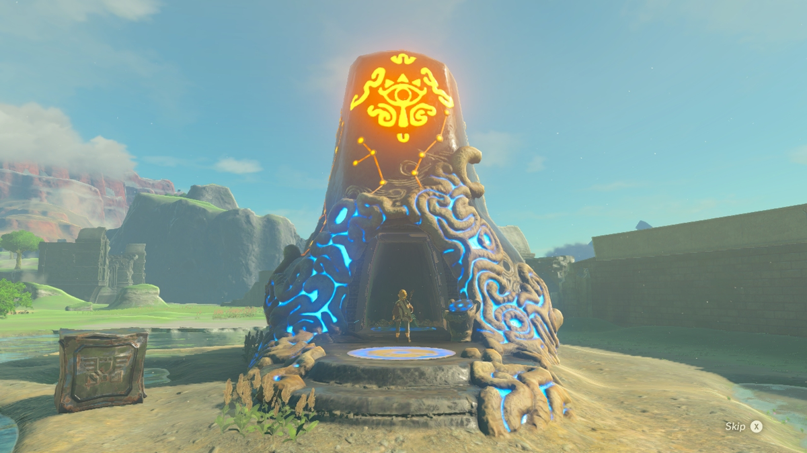

Ancient Shrine

Explore Shrine
Before we can save the princess, we can first explore the shrine. Link want to exercise combat skills and get good weapons.There have total 120 Shrines in this world
Finsh all shrines
Link try to find Master Sword
kill four Divines